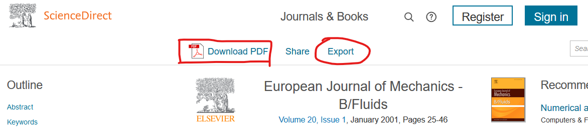

Research Assistant - Zotero
科研的旅途中，需要阅读大量的论文，海量的论文无疑使得管理文献的工作变得非常复杂，尤其是因为命名方法的不恰当，导致后期再次阅读时查找困难。我看到部分学者喜欢使用author,year,title的组合方式命名文献如下图，然后存储至一固定文件夹中，以此管理文献。
这样的方式固然方便，但同时文件名中所含的信息太少，当论文过多时，在搜索时极易引起混乱，因此不利于管理。

如今，各类文献管理软件的兴起，如Mendeley，Endnote，Zotero 以及国产软件NoteExpress等，使得论文管理有了一个比较好的提升。笔者目前使用较多是Zotero，这里着重介绍这一软件的入门使用，其中包括笔者文章引用过程中的一些小技巧以及如何结合Latex快速生成论文的参考文献。
Zotero的安装
Zotero 安装完成后，推荐注册，方便在云端同步文献库。通过Edit>>Preferences>>Sync 确认是否登录。考虑到软件仅免费提供约100MB的空间，所以建议取消Sync full-text context选项， 这样不会同步全文，节省空间。完成这一步后，如果使用firefox 浏览器，可以安装相应的插件便于以后的文献插入。
Zotero的文献导入
Zotero的文献导入途径很多，经过笔者多年的测试，推荐使用以下方法。简单来说是google scholar + firefox结合。
通过google scholar等途径可获取文献网址数据库(如springer, Elsevier等)后，可进入下载页面，如下图所示。

Zotero导出BibTex
Microsoft Word, Libre Office 可以通过插件使用 Zotero，具体方法请参照官网，这里不在做详细说明。鉴于排版的需求，建议使用Latex编辑论文。这里介绍两种方法导出BibTex文件。
直接导入
- 选择需要导入的文献， Ctrl+左键，可选择多个文献.
- 右击已选择的项目并选择 ‘Export Items’.
- 改变输出格式为 ‘BibLaTex’ 或者 ‘BibTex’.
- 保持默认选项或者使得 ‘Export Notes’被选择.
- 点击Ok，即可生成 ‘.bib’ 文件.
使用Better BibTex插件导入
Better BibTex 使得 ‘.bib’文件保持与Zotero数据库的同步更新，并且便于使用定制的Citation Key 。使用方法，可参考https://guides.library.iit.edu/c.php?g=720120&p=6296986
改变Better BibTex Export
有时为了保持文献格式的一致性，我们需要省略参考文献中的一些内容比如urldate, issue 等等
具体可以在Better BibTex setting 里面 修改 Export -> Fields -> Fields to omit from export (comma-separated) abstract,file,urldate,editor,issue,extra,doi,issn,number